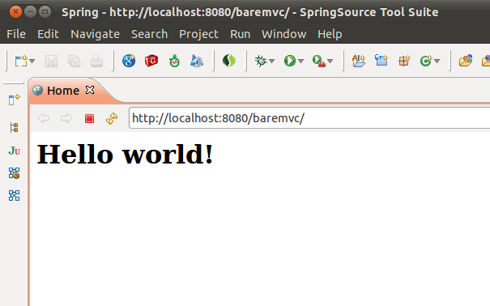

Green Beans: Getting Started with Spring MVC
Spring MVC, a part of the core Spring Framework, is a mature and capable action-response style web framework, with a wide range of capabilities and options aimed at handling a variety of UI-focused and non-UI-focused web tier use cases. All this can potentially be overwhelming to the Spring MVC neophyte. I think it’s useful for this audience to show just how little work there is to get a bare Spring MVC application up and running (i.e. consider my example something akin to the world’s simplest Spring MVC application), and that’s what I’ll spend the rest of this article demonstrating.
I’m assuming you are familiar with Java, Spring (basic dependency injection concepts), and the basic Servlet programming model, but do not know Spring MVC. After reading this blog entry, readers may continue learning about Spring MVC by looking at Keith Donald’s Spring MVC 3 Showcase, or the variety of other online and print resources available that cover Spring and Spring MVC.
A note on dependencies and build systems: this article does not assume that you are using a particular build system, e.g. Maven, Gradle or Ant. A fairly minimal sample Maven POM file is includes as an example at the end of the article.
Spring MVC includes most of the same basic concepts as other so-called web MVC frameworks. Incoming requests enter the framework via a Front Controller. In the case of Spring MVC, this is an actual Java Servlet called DispatcherServlet. Think of DispatcherServlet as the gatekeeper. It doesn’t perform any real web or business logic, but rather delegates to POJOs called Controllers where the real work is done (either in whole or via the back-end). When the work has been done, it’s the responsibility of Views to produce the output in the proper format (whether that’s a JSP page, Velocity template, or JSON response). Strategies are used to decide which Controller (and which method(s) inside that Controller) handles the request, and which View renders the response. The Spring container is used to wire together all these pieces. It all looks something like this:
{kind=link}
Bootstrapping the DispatcherServlet and Spring Container
As mentioned, all incoming requests flow through a
DispatcherServlet. Like any other Servlet in a Java EE application, we tell the Java EE container to load this Servlet at web app startup time via an in the web app’s WEB-INF/web.xml. The DispatcherServlet is also responsible for loading a Spring ApplicationContext that is used to perform wiring and dependency injection of managed component. On this basis, we specify some init parameters to the Servlet which configure the Application Context. Let’s look at the config in web.xml:WEB-INF/web.xml
```xml
<?xml version=“1.0” encoding=“UTF-8”?>
<web-app version=“2.5” xmlns=“http://java.sun.com/xml/ns/javaee”
xmlns:xsi=“http://www.w3.org/2001/XMLSchema-instance”
xsi:schemaLocation="http://java.sun.com/xml/ns/javaee http://java.sun.com/xml/ns/javaee/web-app_2_5.xsd"
<!-- Processes application requests --> <servlet> <servlet-name>appServlet</servlet-name> <servlet-class>org.springframework.web.servlet.DispatcherServlet</servlet-class> <init-param> <param-name>contextConfigLocation</param-name> <param-value>/WEB-INF/spring/appServlet/servlet-context.xml</param-value> </init-param> <load-on-startup>1</load-on-startup> </servlet> <servlet-mapping> <servlet-name>appServlet</servlet-name> <url-pattern>/</url-pattern> </servlet-mapping>
```
A number of things are being done here:
- We register the DispatcherServlet as as a Servlet called
appServlet - We map this Servlet to handle incoming requests (relative to the app path) starting with “/”
- We use the
ContextConfigLocationinit parameter to customize the location for the base configuration XML file for the Spring Application Context that is loaded by the DispatcherServlet, instead of relying on the default location of <servletname>-context.xml).
Wait, What if Somebody Doesn’t Want to Configure Spring via XML?
The default type of Application Context loaded by the DispatcheServlet expects to load at least on XML file with Spring bean definitions. As you’ll see, we’ll also enable Spring to load Java-based config, alongside the XML.
Everybody will have their own (sometimes very strong) opinion in this area, but while I generally prefer-Java based configuration, I do believe that smaller amounts of XML config for certain areas can sometimes still make more sense, for one of a number of reasons (e.g. ability to change config without recompilation, conciseness of XML namespaces, toolability, etc.). On this basis, this app will use the hybrid approach, supporting both Java and XML.
Rest assured that if you prefer a pure-Java approach, with no Spring XML at all, it’s pretty trivial to achieve, by setting one init param in web.xml to override the default Application Context type and use a variant called AnnotationConfigWebApplicationContext instead.
The Controller
Now let’s create a minimal controller:
package xyz.sample.baremvc; import org.springframework.stereotype.Controller; import org.springframework.web.bind.annotation.RequestMapping; /** * Handles requests for the application home page. */ @Controller public class HomeController { @RequestMapping(value = "/") public String home() { System.out.println("HomeController: Passing through..."); return "WEB-INF/views/home.jsp"; } } Let’s walk through the key aspects of this class:
- The class has been annotated with the
@Controllerannotation, indicating that this is a Spring MVC Controller capable of handling web requests. Because@Controlleris a specialization of Spring’s@ComponentStereotype annotation, the class will automatically be detected by the Spring container as part of the container’s component scanning process, creating a bean definition and allowing instances to be dependency injected like any other Spring-managed component. - The
homemethod has been annotated with a@RequestMappingannotation, specifying that this method should handle web requests to the path “/”, i.e. the home path for the application. - The
homemethod simply logs a message to system out, and then returnsWEB-INF/views/home.jsp, indicating the view which should handle the response, in this case a JSP page. (If hardcoding the entire view path including WEB-INF prefix, and the fact that it’s a JSP, seems wrong to you, you are right. We’ll deal with this later)
Now, we need to create the view. This JSP page will simply print a greeting.
WEB-INF/views/home.jsp
```html
<%@ taglib uri=“http://java.sun.com/jsp/jstl/core” prefix=“c” %>
<%@ page session=“false” %>
Hello world!
```
Finally, as previously mentioned, we need to create a minimal Spring Application Context definition file.
WEB-INF/spring/appServlet/servlet-context.xml
```xml
<?xml version=“1.0” encoding=“UTF-8”?>
<beans xmlns=“http://www.springframework.org/schema/beans”
xmlns:xsi=“http://www.w3.org/2001/XMLSchema-instance”
xmlns:mvc=“http://www.springframework.org/schema/mvc”
xmlns:context=“http://www.springframework.org/schema/context”
xsi:schemaLocation="
http://www.springframework.org/schema/mvc http://www.springframework.org/schema/mvc/spring-mvc-3.0.xsd
http://www.springframework.org/schema/beans http://www.springframework.org/schema/beans/spring-beans-3.0.xsd
http://www.springframework.org/schema/context http://www.springframework.org/schema/context/spring-context-3.0.xsd"
<!-- DispatcherServlet Context: defines this servlet's request-processing infrastructure --> <!-- Scans within the base package of the application for @Components to configure as beans --> <!-- @Controller, @Service, @Configuration, etc. --> <context:component-scan base-package="xyz.sample.baremvc" /> <!-- Enables the Spring MVC @Controller programming model --> <mvc:annotation-driven />
```
Let’s examine the contents of this file:
- You’ll note that a few different Spring XML namespaces are being used: context, mvc, and the default beans
- The <context:component-scan> declaration ensures the Spring container does component scanning, so that any code annotated with
@Componentsubtypes such as@Controlleris automatically discovered. You’ll note that for efficiency, we limit (toxyz.sample.baremvcin this case) what part of the package space Spring should scan in the classpath - The <mvc:annotation-driven> declaration sets up Spring MVC’s support for routing requests to @Controllers, as well as how some things like conversion, formatting and validation are handled (with some sensible defaults based on what (libraries) is present in your classpath, and the ability to override if needed)
The web app is now ready to run. Assuming the Servlet container (tc Server in my case) is set to listen on localhost:8080, starting the application and then hitting the URL
http://localhost:8080/baremvc via our browser results in a display of the expected greeting:
{kind=link}
As trivial as it is, running this application involves all the major pieces of a working Spring MVC application. Let’s walk through the major sequences and component interactions:
- When the web app starts up, the DispatcherServlet is loaded and initialized because of the entry in
web.xml. - The DispatcherServlet loads an annotation-based Application Context, which has been configured to scan for annotated components via a regular expression specifying the base package(s).
- Annotated components such as the HomeController are detected by the container.
- The HTTP request to
http://localhost:8080/baremvchits the servlet engine and is routed to our (baremvc) webapp. - The implicit “/” path at the end of the URL matches the regex that has been registered for the DispatcherServlet, and the request is routed to it
- The DispatcherServlet needs to decide what to do with the request. It uses a strategy called a
HandlerAdapterto decide where to route the request. The specific HandlerAdapter type (or types, since they can be chained) to be used can be customized, but by default, an annotation-based strategy is used, which routes requests appropriately to specific methods in classes annotated as@Controller, based on matching criteria in@RequestMappingannotations found in those classes. In this case, the regex on the home method is matched, and it’s called to handle the request. - The home method does its work, in this case just printing something to system out. It then returns a string that’s a hint (in this case, a very explicit one,
WEB-INF/views/home.jsp) to help chose the View to render the response. - The DispatcherServlet again relies on a strategy, called a
ViewResolverto decide which View is responsible for rendering the response. This can be configured as needed for the application (in a simple or chained fashion), but by default, anInternalResourceViewResolveris used. This is a very simple view resolver that produces aJstlViewwhich simply delegates to the Servlet engine’s internalRequestDispatcherto render, and is thus suitable for use with JSP pages or HTML pages. - The Servlet engine renders the response via the specified JSP
Taking It to the Next Level
At this point, we’ve got an app which certainly qualifies as the world’s simplest Spring MVC application, but frankly, doesn’t really meet the spirit of that description. Let’s evolve things to another level.
As previously mentioned, it’s not appropriate to hard-code a path to a view template into a controller, as our controller curretly does. A looser, more logical coupling between controllers and views, with controllers focused on executing some web or business logic, and generally agnostic to specific details like view paths or JSP vs. some other templating technology, is an example of separation of concerns. This allows much greater reuse of both controllers and views, and easier evolution of each in isolation from the other, with possibly different people working on each type of code.
Essentially, the controller code ideally needs to be something like this variant, where a purely logical view name (whether simple or composite) is returned:
//... @Controller public class HomeController { @RequestMapping(value = "/") public String home() { System.out.println("HomeController: Passing through..."); return "home"; } } Spring MVC’s ViewResolver Strategy is actually the mechanism meant to be used to achieve this looser coupling between the controller and the view. As already mentioned, in the absence of the application configuring a specific ViewResolver, Spring MVC sets up a default minimally configured InternalResourceViewResolver, a very simple view resolver that produces a JstlView. There are potentially other view resolvers we could use, but to get a better level of decoupling, all we actually need to do is set up our own instance of InternalResourceViewResolver with slightly tweaked configuration. InternalResourceViewResolver employs a very simple strategy; it simply takes the view name returned by the controller, and prepends it with an optional prefix (empty by default), and appends it with an optional suffix (empty by default), then feeds that resultant path to a JstlView it creates. The JstlView then delegates to the Servlet engine’s RequestDispatcher to do the real work, i.e. rendering the template. Therefore, to allow the controller to return logical view names like home instead of specific view template paths like WEB-INF/views/home.jsp, we simply need to configure this view resolver with the prefix WEB-INF/views and the suffix .jsp, so that it prepends and appends these, respectively, to the logical name returned by the controller.
One easy way to configure the view resolver instance is to introduce the use of Spring’s Java-based container configuration, with the resolver as a bean definition:
package xyz.sample.baremvc; import org.springframework.context.annotation.Bean; import org.springframework.context.annotation.Configuration; import org.springframework.web.servlet.ViewResolver; import org.springframework.web.servlet.view.InternalResourceViewResolver; @Configuration public class AppConfig { // Resolve logical view names to .jsp resources in the /WEB-INF/views directory @Bean ViewResolver viewResolver() { InternalResourceViewResolver resolver = new InternalResourceViewResolver(); resolver.setPrefix("WEB-INF/views/"); resolver.setSuffix(".jsp"); return resolver; } } We are already doing component scanning, therefore since @Cofiguration is itself an @Component, this new configuration definition with the (resolver) bean inside it is automatically picked up by the Spring container. Then Spring MVC scans all beans and finds the resolver.
This is a fine approach, but some people may instead prefer to configure the resolver as a bean in the XML definition file, e.g.
<!-- Resolve logical view names to .jsp resources in the /WEB-INF/views directory --> <bean class="org.springframework.web.servlet.view.InternalResourceViewResolver"> <property name="prefix" value="/WEB-INF/views/" /> <property name="suffix" value=".jsp" /> </bean> It’s hard to make a case for this object that one particular approach is much better than the other, so it’s really a matter of personal preference in this case (and we can actually see one of the strengths of Spring, its flexible nature).
Handling User Input
Almost any web app needs to take some input from a client, do something with it, and return or render the result. There are a myriad ways to get input into a Spring MVC application, and a myriad ways to render the result, but let’s at least show one variant. In this simple example, we’re going to modify our HomeController to add a new handler method which takes two string inputs, compares them, and return the result.
package xyz.sample.baremvc; import java.util.Comparator; import org.springframework.beans.factory.annotation.Autowired; import org.springframework.stereotype.Controller; import org.springframework.ui.Model; import org.springframework.web.bind.annotation.RequestMapping; import org.springframework.web.bind.annotation.RequestMethod; import org.springframework.web.bind.annotation.RequestParam; /** * Handles requests for the application home page. */ @Controller public class HomeController { @Autowired Comparator<String> comparator; @RequestMapping(value = "/") public String home() { System.out.println("HomeController: Passing through..."); return "home"; } @RequestMapping(value = "/compare", method = RequestMethod.GET) public String compare(@RequestParam("input1") String input1, @RequestParam("input2") String input2, Model model) { int result = comparator.compare(input1, input2); String inEnglish = (result < 0) ? "less than" : (result > 0 ? "greater than" : "equal to"); String output = "According to our Comparator, '" + input1 + "' is " + inEnglish + "'" + input2 + "'"; model.addAttribute("output", output); return "compareResult"; } } Key elements in the new code:
- We’re using another
@RequestMappingannotation to make requests ending in with the path/compareto the new compare method - We are expecting the caller to pass us the two String input parameters as part of the GET request, so we grab them via the
@RequestParamannotation. Note that we are relying on the default handling for this annotation, which assumes that these params are required. The client will receive an HTTP 400 error if they are missing. Note also that this is just one way of passing in parameters to a Spring MVC application. For example, it’s easy to grab parameters that are embedded as part of the request URL path itself, for a more REST-style approach - We use our Comparator instance to compare the two strings
- We stuff the comparison result into the Model object under the key
result, so that it can be accessed by the View. Think of a Model as a glorified hashmap, in simplest terms.
While we could have modified our exisitng view to also be used to display the comparison results, we are instead using a new view template:
WEB-INF/views/compareResult.jsp
```html
<%@ taglib uri=“http://java.sun.com/jsp/jstl/core” prefix=“c” %>
<%@ page session=“false” %>
<c:out value=“${output}”></c:out>
```
Finally, we need to supply the controller with a Comparator instance to use. We have annotated the comparator field in the controller with Spring’s @Autowired annotation (which will be detected automatically after the controler is detected) and instructs the Spring container to inject a Comparator into that field. Therefore, we need to ensure the container has one available. For this purpose, a minimal Comparator implementation has been created, which simply does a case insensitive comparison. For simplicity’s sake, this class has itself been annotated with Spring’s @Service Stereotype annotation, a type of @Component and thus will automatically be detected by the Spring container as part of the container’s component scanning process, and injected into the controller.
package xyz.sample.baremvc; import java.util.Comparator; import org.springframework.stereotype.Service; @Service public class CaseInsensitiveComparator implements Comparator<String> { public int compare(String s1, String s2) { assert s1 != null && s2 != null; return String.CASE_INSENSITIVE_ORDER.compare(s1, s2); } } Note that we could just as easily have declared an instance of this in the container via a Java based @Bean definition in an @Configuration class, or an XML based bean definition, and certainly those variants might be preferred in many cases for the greater level of control they offer.
We can now start the application and access it with a URL such ashttp://localhost:8080/baremvc/compare?input1=Donkey&input2=dog
to exercise the new code:
{kind=link}
Next Steps
I’ve really only scratched the surface of what Spring MVC can do, but hopefully this blog post has given you an idea as to how easy it is to get going with Spring MVC, and how some of the core concepts in the framework tie together. It may also be appropriate at this point to mention that in the interest of making it easier to understand the core concepts, there are a few (hopefully very obvious) areas in my sample that are not handled the way they would be in a larger or production application, as an example, the hard-coding of messages inside Java code, or some of the package organization.
Now I’d like to encourage you to learn more about and experiment with Spring MVC’s full featureset and comprehensive capabilities in areas such mapping of requests to controllers and methods, data binding and validation, locale and theme support, and general ability to be customized to handle pretty much all web tier use cases that fit the action response model.
One valuable resource for you in this learning process is Keith Donald’s Spring MVC 3 Showcase, which includes working code showing most of the capabilities of Spring MVC, that you can easily load into SpringSource Tool Suite (STS) or another Eclipse environment and experiment with. As an aside, if you are not familiar with STS, I should mention that it’s a great tool for experimenting with the Spring set of technologies, because of its great support for Spring and features like the out of the box project templates. In this short video recording, I show how to get going with a new Spring MVC application via an STS template.
Appendix - Dependencies
The code above should work regardless of which build system you use (these days, I generally prefer Gradle or Maven). Here is a relatively minimal sample Maven POM file to build the above project, which may be used as a base, or to gain an understanding of what dependencies are needed. It’s actually not quite as minimal as it could be, since I’ve explicitly switched out commons-logging for SLF4J, and added some optional repositories and Maven plugins. The only non-obvious item may be the need for CGLIB, which is an optional dependency needed by Spring when @Configuration is used.
<?xml version="1.0" encoding="UTF-8"?> <project xmlns="http://maven.apache.org/POM/4.0.0" xmlns:xsi="http://www.w3.org/2001/XMLSchema-instance" xsi:schemaLocation="http://maven.apache.org/POM/4.0.0 http://maven.apache.org/maven-v4_0_0.xsd"> <modelVersion>4.0.0</modelVersion> <groupId>xyz.sample</groupId> <artifactId>baremvc</artifactId> <name>Sprring MVC sample project</name> <packaging>war</packaging> <version>1.0.0-BUILD-SNAPSHOT</version> <properties> <java-version>1.6</java-version> <org.springframework-version>3.0.6.RELEASE</org.springframework-version> <org.slf4j-version>1.6.1</org.slf4j-version> </properties> <dependencies> <!-- Spring --> <dependency> <groupId>org.springframework</groupId> <artifactId>spring-context</artifactId> <version>${org.springframework-version}</version> <exclusions> <!-- Exclude Commons Logging in favor of SLF4j --> <exclusion> <groupId>commons-logging</groupId> <artifactId>commons-logging</artifactId> </exclusion> </exclusions> </dependency> <dependency> <groupId>org.springframework</groupId> <artifactId>spring-webmvc</artifactId> <version>${org.springframework-version}</version> </dependency> <!-- CGLIB, only required and used for @Configuration usage --> <dependency> <groupId>cglib</groupId> <artifactId>cglib-nodep</artifactId> <version>2.2</version> </dependency> <!-- Logging --> <dependency> <groupId>org.slf4j</groupId> <artifactId>slf4j-api</artifactId> <version>${org.slf4j-version}</version> </dependency> <dependency> <groupId>org.slf4j</groupId> <artifactId>jcl-over-slf4j</artifactId> <version>${org.slf4j-version}</version> <scope>runtime</scope> </dependency> <dependency> <groupId>org.slf4j</groupId> <artifactId>slf4j-log4j12</artifactId> <version>${org.slf4j-version}</version> <scope>runtime</scope> </dependency> <dependency> <groupId>log4j</groupId> <artifactId>log4j</artifactId> <version>1.2.16</version> <scope>runtime</scope> </dependency> <!-- @Inject --> <dependency> <groupId>javax.inject</groupId> <artifactId>javax.inject</artifactId> <version>1</version> </dependency> <!-- Servlet --> <dependency> <groupId>javax.servlet</groupId> <artifactId>servlet-api</artifactId> <version>2.5</version> <scope>provided</scope> </dependency> <dependency> <groupId>javax.servlet.jsp</groupId> <artifactId>jsp-api</artifactId> <version>2.1</version> <scope>provided</scope> </dependency> <dependency> <groupId>javax.servlet</groupId> <artifactId>jstl</artifactId> <version>1.2</version> </dependency> <!-- Test --> <dependency> <groupId>junit</groupId> <artifactId>junit</artifactId> <version>4.7</version> <scope>test</scope> </dependency> </dependencies> <repositories> <repository> <id>org.springframework.maven.release</id> <name>Spring Maven Release Repository</name> <url>http://maven.springframework.org/release</url> <releases><enabled>true</enabled></releases> <snapshots><enabled>false</enabled></snapshots> </repository> <!-- For testing against latest Spring snapshots --> <repository> <id>org.springframework.maven.snapshot</id> <name>Spring Maven Snapshot Repository</name> <url>http://maven.springframework.org/snapshot</url> <releases><enabled>false</enabled></releases> <snapshots><enabled>true</enabled></snapshots> </repository> <!-- For developing against latest Spring milestones --> <repository> <id>org.springframework.maven.milestone</id> <name>Spring Maven Milestone Repository</name> <url>http://maven.springframework.org/milestone</url> <snapshots><enabled>false</enabled></snapshots> </repository> </repositories> <build> <plugins> <plugin> <groupId>org.apache.maven.plugins</groupId> <artifactId>maven-compiler-plugin</artifactId> <configuration> <source>${java-version}</source> <target>${java-version}</target> </configuration> </plugin> <plugin> <groupId>org.apache.maven.plugins</groupId> <artifactId>maven-war-plugin</artifactId> <configuration> <warName>baremvc</warName> </configuration> </plugin> <plugin> <groupId>org.codehaus.mojo</groupId> <artifactId>tomcat-maven-plugin</artifactId> <version>1.1</version> </plugin> </plugins> </build> </project>